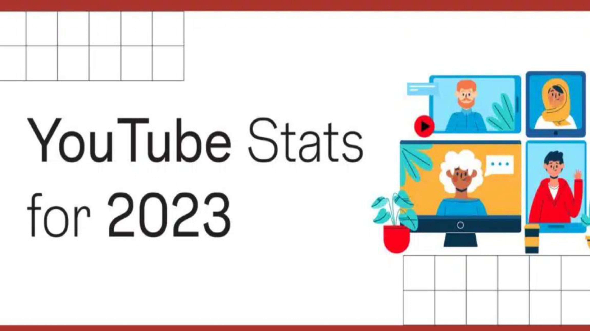
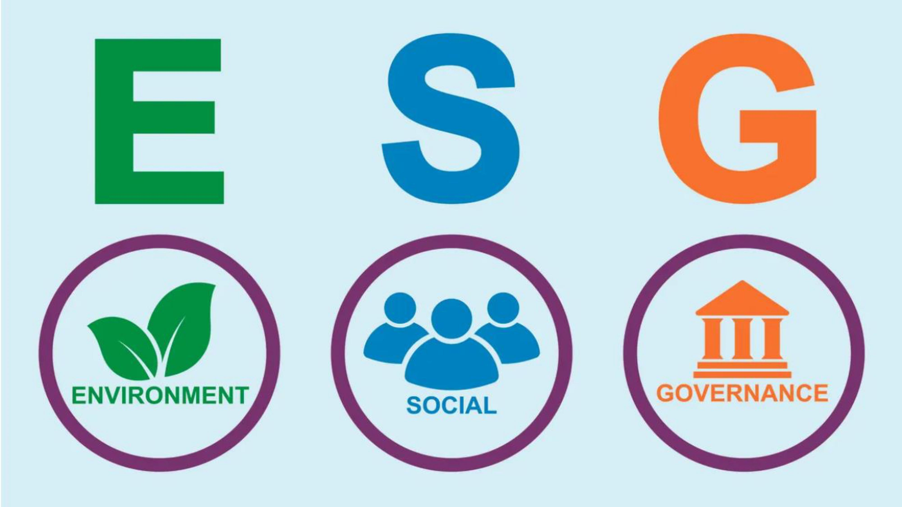

Data Cleaning and Manipulation Using SQL
In this project, raw YouTube statistics data was transformed in SQL Server to derive insights
and understand key factors influencing viewership trends.

I am Nadeem Akhter a seasoned business analyst with approximately 2 years of experience in data analytics and insights,complemented by formal education in business analytics from Ivey Business School. Proficient in analytics tools such as PowerBI, R, Python, and SQL. Eager to engage and collaborate on challenging projects across diverse domains, bringing a wealth of analytical expertise and a commitment to driving impactful results through data-driven strategies.
Explore my projects involving data cleaning, data exploration, data analysis, modelling, and dashboarding in areas such as
business performance indicators, social impact analysis, and sports analytics using tools like SQL, Python, PowerBI, and R
In this project, raw YouTube statistics data was transformed in SQL Server to derive insights
and understand key factors influencing viewership trends.

Utilized R to analyze and predict determinants impacting Flu vaccination adoption, for a comprehensive understanding of key factors influencing uptake.

Developed, analyzed and visualized ESG scores for different countries based on their CO2 emissions, population, GDP, and other factors.
Created a dynamic PowerBI dashboard examining Spotify tracks and streaming patterns, providing an engaging visual representation of music insights and trends.
Designed an Excel dashboard for IPL teams, offering actionable insights crucial for informed decisions, performance analysis, and strategic planning.